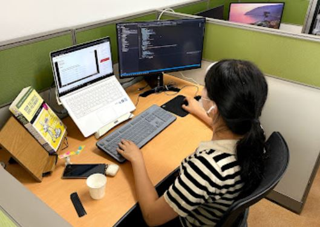

Hyejoo Kim (Undergraduate Visiting Researcher)
|  | Visiting Researcher, Platform Virtualization |
Introduction
Full Bio Sketch
Ms. Kim is an undergraduate student in Economics & Trade, and is double majoring in Computer Science Platform Software at Kyungpook National University Daegu, Republic of Korea. She is focused on studying to have competence of both main major and software developer. For dynamic web development, she is acquiring the skills to handle from Front-end to Back-end by learning PHP, MySQL, and JavaScript. In addition, she is currently studying to build an automation system based on AI such as Dialogflow voice recognition service and document operation automation utilizing Google platform. Her research interests are to analyze and visualize data of social phenomena in combination with her main major, so she plans to study Machine learning and Data Analysis.
Research Topic
 This research was conducted to build SoundAPI that provides on-demand services based on the Web. When the end user voice is delivered, the Dialogflow system identifies the intent of the input and performs Intent matching process. By the Webhook of Dialogflow, the web server built with Node.js or Python extracts and provides responses that match the user intention from existing software, services, and data. This layer, which extracts responses from existing software, services, and data according to the end user intention, is defined as Cloudification. Specifically, the project is carried out with the final goal such as managing member attendance, sending batch messages, and extracting visual data based on voice recognition system.
This research was conducted to build SoundAPI that provides on-demand services based on the Web. When the end user voice is delivered, the Dialogflow system identifies the intent of the input and performs Intent matching process. By the Webhook of Dialogflow, the web server built with Node.js or Python extracts and provides responses that match the user intention from existing software, services, and data. This layer, which extracts responses from existing software, services, and data according to the end user intention, is defined as Cloudification. Specifically, the project is carried out with the final goal such as managing member attendance, sending batch messages, and extracting visual data based on voice recognition system.
Publications
Journal Publications
Conference Publications
Hyejoo Kim and Daejin Park. Effective IoT Design Exploration Using VR-based Interoperation of Heterogenous-Things Models (On Writing) In IEEE ICCE 2023, 2023.
Projects
Dynamic SNS using PHP, JS, MySQL, jQuery, CSS, HTML, 2021.06
AI Chatbot using Dialogflow, 2021.07
Cloud-based Applications using Google API, 2021.08